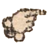

Kto chce wiedzieć, jeśli długo będzie żyw: miec ná kole, w którym Gąsiorek.
Jeśli kto będzie duchownym: ná kole, w którym Gołąb.
Jeśli kto będzie podwyższon: ná kole, w którym Orzeł.
Jeśli kto będzie Fortunny: na kole, w którym Papużka.
Jeśli się czyje myślenie spełni: na kole, w którym Słowik.
Jeśli się dobrze ożenić: na kole, w którym Wrona.
Jeśli kto komu jest prawie: ná kole, w którym Synogarlica.
Jeśli kto będzie co wysłuży ná panie: na kole, w którym Sroka.
Jeśli co dobrze czynić: ná kole, w którym Kruk.
Jeśli kto będzie czego żąda: na kole, w którym Krogulec.
Jeśli się kto ná miłości dobrze ma: ná kole, w którym Kur.
Jeśli dobrze do którego Pana przystać: na kole, w którym Sokoł.
Jeśli która porodzi syna albo dziewkę: ná kole, w którym Kuropátwá
Jeśli która białą głowę miłują: ná kole, w którym Kukułká.
Jeśli która pojmie dobrego męża: ná kole, w którym Szoṕ.
Jeśli która rychło zá mąż pójdzie: na kole, w którym Biegżá.
Jeśli kto będzie bogátym: ná kole, w którym Paw.
Jeśli dobrze być kupcem: ná kole, w którym Żuraw.
Jesli drogá będzie szcześliwa: ná kole, w którym Kaczor.
Jeśli kto zgubę najdzie: na kole, w którym Bocian.
Jeśli kto z świátá zejdzie: na kole gdzie Sowa.
W Krákowie Jan Żaborowski przygotował.